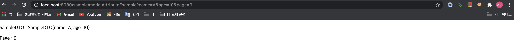
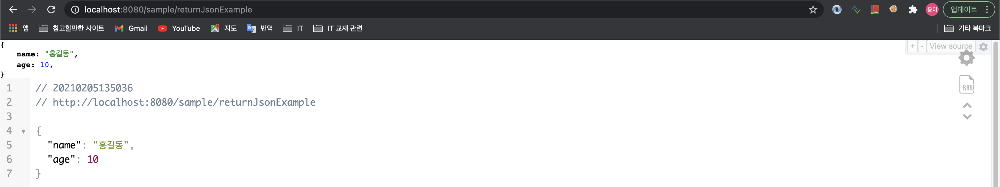
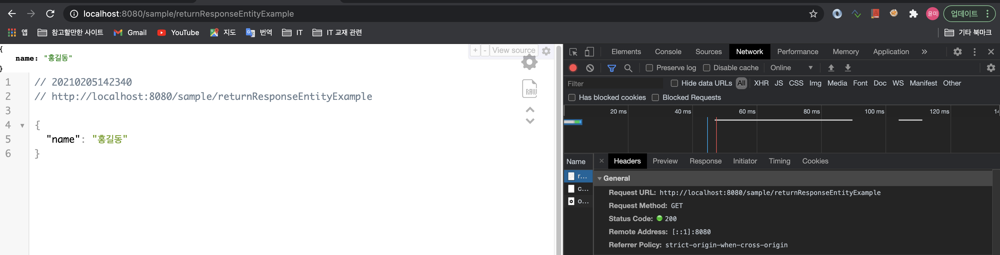
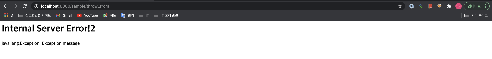
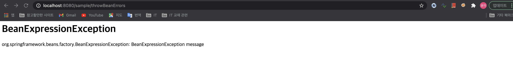
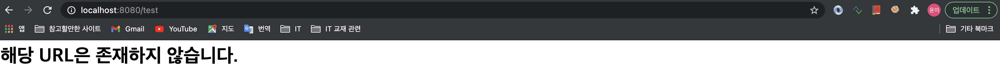

스프링 MVC의 Controller
1. @Controller - 요청받을 준비하기
- ComponentScan 에서 조사 할 수 있도록 해주는 어노테이션으로, 스프링이 관리 할 수 있는 Bean 으로 등록해 주는 어노테이션.
-
Controller 클래스의 선언부에 @RequestMapping 과 같이 자주 사용함.
예제
. ServletConfig.java - ComponentScan 에 controller 소속된 패키지 추가package org.example.config; import org.springframework.context.annotation.ComponentScan; import org.springframework.web.servlet.config.annotation.EnableWebMvc; import org.springframework.web.servlet.config.annotation.ResourceHandlerRegistry; import org.springframework.web.servlet.config.annotation.ViewResolverRegistry; import org.springframework.web.servlet.config.annotation.WebMvcConfigurer; import org.springframework.web.servlet.view.InternalResourceViewResolver; import org.springframework.web.servlet.view.JstlView; @EnableWebMvc @ComponentScan(basePackages = {"org.example.controller"}) public class ServletConfig implements WebMvcConfigurer { // 생략. SampleController.java - controller 작성
package org.example.controller; import org.springframework.stereotype.Controller; import org.springframework.web.bind.annotation.RequestMapping; @Controller @RequestMapping("/sample/*") public class SampleController { // 코드작성 }
2. 요청받을 URL 설정하기 - @RequestMapping, @GetMapping, @PostMapping
-
@RequestMapping: 해당 객체의 URL을 설정하는 기능을 함. - 클래스와 메소드의 선언부에 쓰임.
-
@GetMapping: @RequestMapping의 method 속성이 GET 인 것의 단축표현 -
@PostMapping: @RequestMapping의 method 속성이 POST 인 것의 단축표현. 예제
@Controller @RequestMapping("/sample/*") @Log4j public class SampleController { @RequestMapping(value="", method = {RequestMethod.GET, RequestMethod.POST}) public void basic() { log.info("basic..............."); } @GetMapping("/get") public void basicGet() { log.info("basic get............"); } @PostMapping("/post") public void basicPost() { log.info("basic post............"); } }
3.파라미터 받기 - DTO, @RequestParam, DTOList, @DateTimeFormat
1-1. VO, DTO 객체 파라미터
- DTO 객체의 속성들은 별도의 처리 없이 파라미터를 받고 화면에 전달하는 것 까지 가능하다.
-
DTO 가 될 수 있는 자격은
Bean의 자격을 갖춘 (인자가 없는 생성자, 게터/세터가 있어야 함) 객체여야 한다.예제
. org.example.domain 패키지 > SampleDTO.javapackage org.example.domain; import lombok.Data; @Data public class SampleDTO { private String name; private int age; }. org.example.controller.SampleController.java
. 호출 시,http://localhost:8080/sample/dto?name="A"&age=10라고 호출하면, SampleDTO 객체로 받고, 화면으로 전달도 가능하다.@Controller @RequestMapping("/sample/*") @Log4j public class SampleController { // 상단 생략 @GetMapping("dto") public void getDtoExample(SampleDTO dto) { log.info("name:" + dto.getName()); // name:A log.info("age:" + dto.getAge()); // age:10 } }
1-2. @RequestParam
-
전달된 파라미터와 controller 내에서 사용할 파라미터의 변수명이 다를 경우 유용하게 사용된다.
예제
@Controller @RequestMapping("/sample/*") @Log4j public class SampleController { // 상단 생략 @GetMapping("/requestparam") public void getRequestParamExample(@RequestParam("name") String myName) { log.info("name:" + myName); // name: A } }.
http://localhost:8080/requestparam?name=A로 호출 시, "name:A" 가 출력된다.
1-3. 리스트, 배열 파라미터 처리하기
-
동일한 이름의 파라미터가 여러개 전달 될 때,
ArrayList<>나배열객체로 받을 수 있다.예제
.http://localhost:8080/sample/list?ids=1&ids=2&ids=3처럼 ids 라는 파라미터가 여러개 전달 되었다고 가정하자.@Controller @RequestMapping("/sample/*") @Log4j public class SampleController { // 상단 생략 @GetMapping("/list") public void getListParameterExample(@RequestParam("ids") ArrayList<String> ids) { log.info("List ids:"+ids); } // 출력] INFO : org.example.controller.SampleController - List ids:[1, 2, 3] @GetMapping("/array") public void getArrayParameterExample(@RequestParam("ids") String[] ids) { log.info("Array ids:"+Arrays.deepToString(ids)); } // 출력] INFO : org.example.controller.SampleController - Array ids:[1, 2, 3] }
1-3. DTO객체 리스트 처리하기
-
동일한 이름의 파라미터가 여러개 전달 될 때,
dtoList.java객체를 생성하여 받을 수 있다.예제
.http://localhost:8080/sample/dtolist?list%5B0%5D.name=A&list%5B0%5D.age=10&list%5B1%5D.name=B&list%5B1%5D.age=20처럼 SampleDTO 객체 파라미터가 여러개 전달 되었다고 가정하자.(encoding된 url.)( http://localhost:8080/sample/dtolist?list[0].name=A&list[0].age=10&list[1].name=B&list[1].age=20 과 같음. )
. SampleDTOList.java
package org.example.domain; @Data public class SampleDTOList { private List<SampleDTO> list; public SampleDTOList() { list = new ArrayList<>(); } }. SampleController.java
@Controller @RequestMapping("/sample/*") @Log4j public class SampleController { @GetMapping("/dtolist") public void getDtoListExample(SampleDTOList list) { log.info("dto list:" + list); // 출력 : INFO : org.example.controller.SampleController - dto list:SampleDTOList(list=[SampleDTO(name=A, age=10), SampleDTO(name=B, age=20)]) } }
1-4. 날짜 포맷의 파라미터를 date 타입으로 받기.
-
DTO 의
Date자료형으로 된 속성에@DateTimeFormat(pattern="yyyy/mm/dd")만 붙이면, 파라미터를 Date 형으로 받을 수 있다.예제
. TodoDTO.java
@Data public class TodoDTO { @DateTimeFormat(pattern="yyyy/mm/dd") private Date dueDate; }. SampleController.java
@GetMapping("/date") public void getDateParameterExample(TodoDTO dto) { log.info("date:" + dto.getDueDate()); //[요청] http://localhost:8080/sample/date?dueDate=2020/01/01 //[출력] INFO : org.example.controller.SampleController - date:Wed Jan 01 00:01:00 KST 2020 }
4. 화면으로 데이터 전달하기 - DTO, Model 객체, @ModelAttribute, RedirectAttributes
4-1. Model 객체
- 메소드의 파라미터로 선언하면, 자동으로 객체가 생성된다.
-
controller 에서 새롭게 처리한 데이터를 화면으로 전달할 때 사용한다.
예제
. SampleController.java
@GetMapping("/modelExample") public void modelExample(Model model) { model.addAttribute("test", "Success!!"); }. modelExample.jsp
<%@ taglib uri="http://java.sun.com/jsp/jstl/core" prefix="c" %> <%@ page session="false" %> <html> <body> <P> ${test} </P> </body> </html>
4-2. @ModelAttribute 애노테이션
- DTO 의 경우, 자동으로 화면으로 전달 된다. ( 첫 대문자가 소문자로 바뀌어 전달됨. )
- 그러나, 전달 받은 기본 자료형 (int, string…) 의 경우, 별도의 처리를 하지않으면 자동으로 화면으로 전달되지 않는다.
-
@ModelAttribute 어노테이션은 기본자료형도 자동으로 화면까지 전달 해주는 기능을 한다.
예제
. SampleDTO.java
@Data public class SampleDTO { private String name; private int age; }. SampleController.java
@GetMapping("/modelAttributeExample") public void modelAttributeExample(SampleDTO dto, @ModelAttribute("page") int page) { }. modelAttributeExample.jsp
<%@ page language="java" contentType="text/html; charset=UTF-8" pageEncoding="UTF-8"%> <!DOCTYPE html> <html> <head> <meta charset="UTF-8"> <title>Insert title here</title> </head> <body> <p>SampleDTO : ${sampleDTO} </p> <p>Page : ${page}</p> </body> </html>. 결과화면 
4-3. RedirectAttributes
- 일회성으로 데이터를 전달하는 용도.
// Todo.
5. Controller의 반환 타입 - DTO, void, string, ResponseEntity, Model
5-1. void 타입
-
해당 URL 그대로 jsp 이름으로 사용
@GetMapping("voidSample") public void voidSample(){ }-> voidSample.jsp 응답함.
5-2. String 타입
- jsp 이름을 리턴함.
- 특별한 키워드를 붙여서 사용할 수 있음.
"redirect:home"forward:home"
@Controller public class HomeController { @GetMapping("/") public String home(Locale locale, Model model) { Date date = new Date(); DateFormat dateFormat = DateFormat.getDateTimeInstance(DateFormat.LONG, DateFormat.LONG, locale); String formattedDate = dateFormat.format(date); model.addAttribute("serverTime", formattedDate ); return "home"; } }-> home.jsp 로 응답함.
5-3. 객체 타입 (Json 변환)
- VO나 DTO 타입등 객체 타입을 리턴 할 수 있는데, 이 경우
JSON 데이터를 만들어 내는 용도로 사용함. - HttpResponse 객체를 전달함으로 화면으로 전달하지 않음. ajax와 함께 쓰임
-
JSON 데이터로 변환하는 준비 :
jackson-databind<!-- https://mvnrepository.com/artifact/com.fasterxml.jackson.core/jackson-databind --> <dependency> <groupId>com.fasterxml.jackson.core</groupId> <artifactId>jackson-databind</artifactId> <version>2.11.3</version> </dependency> -
메소드의 리턴타입에 @ResponseBody 어노테이션 붙이고 객체 리턴하기
@GetMapping("returnJsonExample") public @ResponseBody SampleDTO returnJsonExample() { SampleDTO dto = new SampleDTO(); dto.setName("홍길동"); dto.setAge(10); return dto; } -
실행 확인 :
http://localhost:8080/returnJsonExample
5-4. ResponseEntity 타입
- HTTP의
Header정보나 데이터를 전달하기 위해 사용 - HttpResponse 객체를 전달함으로 화면으로 전달하지 않음. ajax와 함께 쓰임
-
ResponseEntity 리턴 예제
@GetMapping("returnResponseEntityExample") public ResponseEntity<String> returnResponseEntityExample(){ String msg = "{\"name\":\"홍길동\"}"; HttpHeaders header = new HttpHeaders(); header.add("Content-Type", "application/json;charset=UTF-8"); return new ResponseEntity<>(msg, header, HttpStatus.OK); } -
실행화면

6. 파일 업로드 (servlet3.0)
- Servlet3.0 이상에서는 기본적으로 파일업로드 기능 제공.
- Servlet3.0 이전 버전에서는 commons-fileupload, cos.jar 등의 라이브러리가 필요함
- 이번 예제는,
commons-fileupload라이브러리를 사용하도록 하겠음.
-
commons-fileupload 라이브러리 설치
<!-- https://mvnrepository.com/artifact/commons-fileupload/commons-fileupload --> <dependency> <groupId>commons-fileupload</groupId> <artifactId>commons-fileupload</artifactId> <version>1.3.3</version> </dependency> - 파일 업로드 할 임시 폴더 생성 : /Users/kim-yunmi/fileupload/tmp
- servlet-context.xml 또는 ServletConfig.java 에
MultipartResolver(파일업로드)에 대한 설정하기-
ServletConfig.java
package org.example.config; @EnableWebMvc @ComponentScan(basePackages = {"org.example.controller"}) public class ServletConfig implements WebMvcConfigurer { // 상단 생략. @Bean(name="multipartResolver") public CommonsMultipartResolver getResolver() throws IOException{ CommonsMultipartResolver resolver = new CommonsMultipartResolver(); // 10MB resolver.setMaxUploadSize(1024 * 1024 * 10); // 2MB resolver.setMaxUploadSizePerFile(1024 * 1024 * 2); // 임시 폴더 resolver.setUploadTempDir(new FileSystemResource("/Users/kim-yunmi/fileupload/tmp")); resolver.setD efaultEncoding("UTF-8"); return resolver; } } -
servlet-context.xml (
bean id는 꼭 "multipartResolver" 여야 함.)<beans:bean id="multipartResolver" class="org.springframework.web.multipart.commons.CommonsMultipartResolver"> <beans:property name="defaultEncoding" value="utf-8"></beans:property> <beans:property name="maxUploadSize" value="104857560"></beans:property> <beans:property name="maxUploadSizePerFile" value="2097152"></beans:property> <beans:property name="uploadTempDir" value="file:/Users/kim-yunmi/fileupload/tmp"></beans:property> <beans:property name="maxInMemorySize" value="10485756"></beans:property> </beans:bean> -
uploadTempDir 의 경로는, URL 형식으로 하여야 하므로 ‘file:' 로 시작함
-
-
SampleController.java : 파일 업로드 화면으로 이동할 GET 방식의 Controller
@GetMapping("/uploadExample") public void uploadExampleGet() { } -
uploadExample.jsp : 파일 업로드 화면
<%@ page language="java" contentType="text/html; charset=UTF-8" pageEncoding="UTF-8"%> <!DOCTYPE html> <html> <head> <meta charset="UTF-8"> <title>fileUpload Example</title> </head> <body> <form action="uploadExample" method="post" enctype="multipart/form-data"> <div><input type="file" name="files"></div> <div><input type="file" name="files"></div> <div><input type="file" name="files"></div> <div><input type="file" name="files"></div> <div><input type="file" name="files"></div> <div><input type="submit"></div> </form> </body> </html> -
SampleController.java : 파일 업로드를 처리할 Post 방식의 컨트롤러
// 파일업로드 처리 @PostMapping("/uploadExample") public void uploadExamplePost(ArrayList<MultipartFile> files) { files.forEach(file -> { log.info("-------------------"); log.info("fileName:" + file.getOriginalFilename()); log.info("size:" + file.getSize()); // 파일을 업로드 처리할 코드 작성. (여기서는 넘어감.) }); }
7. Controller의 예외처리 - @ControllerAdvice, @ExceptionHandler
- @ExceptionHandler와 @ControllerAdvice 이용한 처리
- @ResponseEntity를 이용한 예외 메시지 전달
-
org.example.exception패키지 생성한다. - Java Configuration일 경우,
ServletConfig.java의 @ComponentScan 에 "org.example.exception" 패키지를 추가한다. - XML 설정일 경우,
servlet-context.xml에<context:component-scan base-package="org.example.exception"/>을 추가한다.
7-1. 서버에러 (500에러) 처리
-
CommonExceptionAdvice.java: 예외 처리 객체 생성@ControllerAdvice @Log4j public class CommonExceptionAdvice { @ExceptionHandler(Exception.class) public String except(Exception ex, Model model) { log.error("Exception:"+ex.getMessage()); model.addAttribute("exception", ex); return "error/error_page"; } @ExceptionHandler(BeanExpressionException.class) public String beanExcept(BeanExpressionException ex, Model model) { log.error("BeanExpressionException:"+ex.getMessage()); model.addAttribute("exception", ex); return "error/bean_error_page"; } }- 클래스에 @ControllerAdvice 를 붙인다.
- 메소드에 @ExceptionHandler 를 붙이고, () 안에 처리할 Exception 클래스를 넣는다. 이 때
Exception.class대신 구체적인 예외 클래스를 지정할 수 있다.
-
error/error_page.jsp,error/bean_error_page.jsp: 예외정보를 보여줄 화면 작성 (WEB-INF/views/error 폴더 하위에 jsp를 작성한다. except() 메소드가 "error/error_page" 를 리턴하였기 때문이다.)<%@ taglib uri="http://java.sun.com/jsp/jstl/core" prefix="c" %> <%@ page session="false" %> <html> <head> <title>Internal Server Error</title> </head> <body> <h1> Internal Server Error! </h1> ${exception} </body> </html> -
SampleController.java: 예외처리 테스트를 위해서, 강제로 예외를 던지는 controller를 작성한다.// 에러발생 테스트 1 @GetMapping("/throwErrors") public void exceptionTest() throws Exception { throw new Exception("Exception message"); } // 에러발생 테스트 2 @GetMapping("/throwBeanErrors") public void beanExceptionTest() throws BeanExpressionException { throw new BeanExpressionException("BeanExpressionException message"); } -
http://localhost:8080/sample/throwErrors를 호출하면, except() 에서 예외를 처리하고 error_page.jsp 예외화면이 발생한다.
-
http://localhost:8080/sample/throwBeanErrors를 호출하면, beanExcept() 에서 예외를 처리하고 bean_error_page.jsp 예외화면이 발생한다.
7-2. 404 에러 처리
-
web.xml또는WebConfig.java에 404 에러처리를 위한 설정을 할 수 있다. (Servlet 3.0 이상). web.xml
<servlet> <!-- 상단생략 --> <init-param> <param-name>throwExceptionIfNoHandlerFound</param-name> <param-value>true</param-value> </init-param> <load-on-startup>1</load-on-startup> </servlet>. WebConfig.java
public class WebConfig extends AbstractAnnotationConfigDispatcherServletInitializer { // 상단 생략 @Override protected void customizeRegistration(Dynamic registration) { // TODO Auto-generated method stub registration.setInitParameter("throwExceptionIfNoHandlerFound", "true"); } } -
CommonExceptionAdvice.java클래스에 404에러 처리를 위한 메소드를 작성한다.@ControllerAdvice @Log4j public class CommonExceptionAdvice { // 상단 생략 @ExceptionHandler(NoHandlerFoundException.class) @ResponseStatus(HttpStatus.NOT_FOUND) public String handle404(NoHandlerFoundException ex) { return "error/custom404"; } } -
error/custom404.jsp: 404에러를 보여줄 화면을 작성한다.<%@ taglib uri="http://java.sun.com/jsp/jstl/core" prefix="c" %> <%@ page language="java" contentType="text/html; charset=UTF-8" pageEncoding="UTF-8" session="false" %> <html> <head> <title>Page Not Found!</title> <meta http-equiv="Content-Type" content="text/html; charset=UTF-8"> </head> <body> <h1> 해당 URL은 존재하지 않습니다. </h1> </body> </html>-
<%@ page language="java" contentType="text/html; charset=UTF-8" pageEncoding="UTF-8" session="false" %>를 작성해야 한글이 깨지지 않는다.
-
-
웹 브라우저에
http://localhost:8080/test를 호출하여 404 에러처리를 확인한다.
(/sample/** 의 패턴을 사용하면 SampleController 가 동작해 버리므로, 404 확인을 위해서는 사용하면 안됨.)